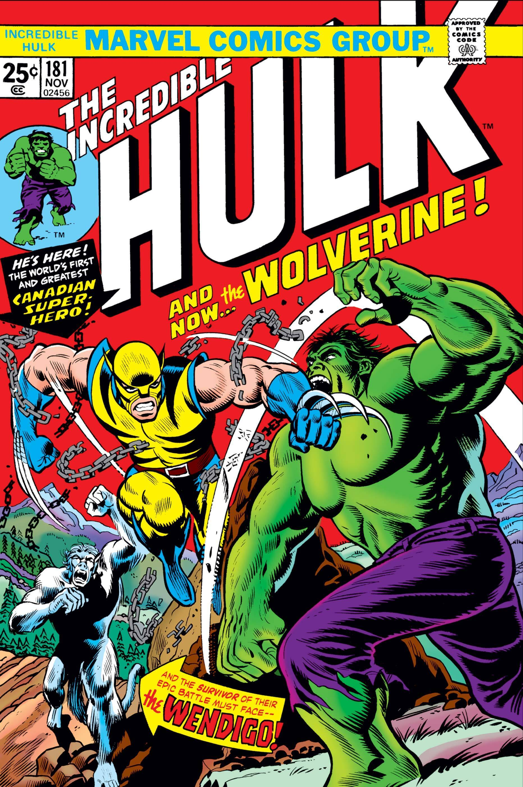

Wolverine é um dos mutantes mais conhecidos dos quadrinhos, reconhecido pela regeneração acelerada, pelas garras retráteis e por um esqueleto reforçado com um metal praticamente indestrutível. Criado nos anos 1970, o personagem rapidamente se tornou uma das figuras mais marcantes ligadas aos X-Men.

O personagem apareceu pela primeira vez em uma revista de quadrinhos no início da década de 1970, participando de uma história que o apresentava como um agente enviado pelo governo canadense. A recepção positiva fez com que ele voltasse pouco depois em novas edições, até conquistar espaço fixo entre os X-Men.
Ao longo dos anos, diferentes fases dos quadrinhos revelaram aos poucos o passado de Wolverine, marcado por experimentos, perdas de memória e uma vida muito mais longa do que aparenta. Essa mistura de mistério e força bruta ajudou a consolidar o personagem como um dos favoritos do público.